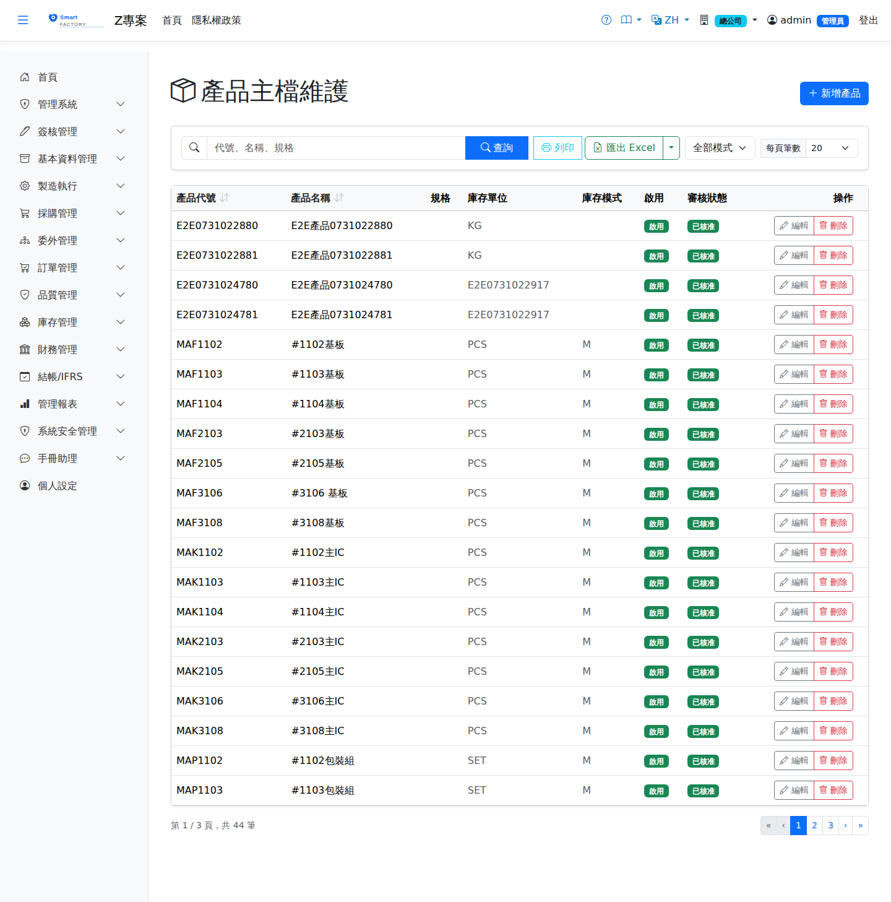

產品主檔Product Master
路由：/BAS/Product | 所有料件、成品、半成品的基本資料Route: /BAS/Product | Basic data of every material, finished and semi-finished item
產品主檔是採購、庫存、製造各模組的核心主檔。每個料號均需在此建立，並設定計量單位、成本、MRP 參數等。新增或修改產品可能需要通過簽核流程。The product master is the core master data of purchasing, inventory and manufacturing. Every product code is created here together with its unit of measure, cost and MRP parameters. Creating or changing a product may require approval.

產品主檔畫面截圖（示意，實際欄位/資料依權限與查詢條件而異）Product master screenshot (illustrative; actual fields and data vary by permission and query criteria)
欄位說明Field reference
基本資料Basic Info
| 欄位名稱Field | 必填Required | 說明Guide |
|---|---|---|
| 產品代碼Product Code | 必填Required | 唯一料號，建立後不可修改Unique product code; cannot be changed once created |
| 產品名稱Product Name | 必填Required | 料件完整名稱Full product name |
| 規格Spec | 型號、材質、尺寸等補充說明Notes such as model, material and dimensions | |
| 是否啟用Active | 停用後無法在新單據中選取Once inactive, cannot be selected on new documents | |
| 是否批號管制Lot Controlled | 勾選後進貨/領料需填入批號Once checked, receipts and issues must carry a lot number |
計量單位Unit of Measure
| 欄位名稱Field | 必填Required | 說明Guide |
|---|---|---|
| 庫存計量單位Stock UOM | 必填Required | 庫存管理使用的計量單位（例：PCS、KG）Unit used for inventory management (e.g. PCS, KG) |
| 採購計量單位Purchase UOM | 向廠商採購時使用的計量單位，可與庫存單位不同Unit used when buying from suppliers; may differ from the stock UOM | |
| 銷售計量單位Sales UOM | 銷售給客戶時使用的計量單位Unit used when selling to customers | |
| 庫存模式Stock Mode | 一般庫存 / 虛擬料件（不實際入庫）Normal stock / phantom item (never physically received) |
成本與供應參數Cost and supply parameters
| 欄位名稱Field | 必填Required | 說明Guide |
|---|---|---|
| 標準成本Standard Cost | 用於製造成本差異分析的標準單位成本Standard unit cost used in manufacturing cost variance analysis | |
| 安全庫存Safety Stock | 庫存低於此數量時觸發警示Triggers an alert when stock falls below this quantity | |
| 前置天數Lead Time (days) | 一般採購或製造所需工作天數，MRP 計算使用Working days normally needed to buy or make the item; used by MRP | |
| 急件前置天數Rush Lead Time (days) | 緊急採購的最短天數Shortest number of days for a rush purchase | |
| MRP 模式MRP Mode | 自製（Make）/ 外購（Buy）/ 委外（Outsource）Make / Buy / Outsource | |
| 委外每日產量Outsource Daily Output | 委外模式下，廠商每日可供貨量（MRP 計算用）Quantity the supplier can deliver per day in outsource mode (used by MRP) | |
| 保存期限（天）Shelf Life (days) | 批號管制品的效期天數，批號入庫時自動計算到期日Shelf life in days for lot-controlled items; the expiry date is calculated when the lot is received |
製程關聯Process links
| 欄位名稱Field | 必填Required | 說明Guide |
|---|---|---|
| 途程Routing | 綁定製程途程，工單建立時自動帶入工序Bound to a routing so that operations are filled in automatically when a work order is created | |
| 產品類別Product Category | 可多選，決定適用的倉庫預設與批號管制Multi-select; drives the default warehouse and lot control that apply |
簽核流程Approval flow
若管理者啟用了產品主檔的簽核範本，新增或修改後需送審，主管核准後才可在採購/工單中使用。If an approval template is enabled for the product master, new or changed products must be submitted and approved before they can be used on purchase orders or work orders.
操作步驟Steps
新增產品Add Product
1
進入「基本資料 > 產品主檔」，點右上角「新增」。Go to "Basic Data > Product Master" and click "Add" in the top right corner.
2
填入產品代碼、名稱、庫存計量單位（必填）。Enter the product code, name and stock UOM (required).
3
視需要填入成本、安全庫存、MRP 模式、前置天數。Enter cost, safety stock, MRP mode and lead time as required.
4
點「儲存」，若需簽核則接著點「送審」。Click "Save", then click "Submit" if approval is required.
查詢產品Searching products
1
查詢列可輸入料號或名稱關鍵字，並可依「庫存模式」篩選。Enter a product code or name keyword in the search bar; you can also filter by "Stock Mode".
2
點擊欄標題可排序；預設按產品代碼升序排列。Click a column header to sort; the default is product code ascending.
新增產品後若發現無相應計量單位，請先至「計量單位」畫面建立，再回來設定產品。If the unit of measure you need does not exist when adding a product, create it on the Unit of Measure screen first and then come back.
注意：Note:產品代碼建立後不可修改。修改標準成本會影響後續工單的成本差異計算，請謹慎操作。 The product code cannot be changed once created. Changing the standard cost affects the cost variance of later work orders, so proceed with care.